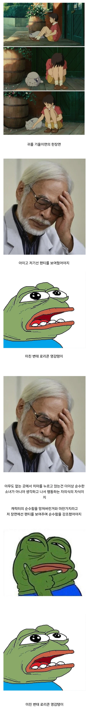
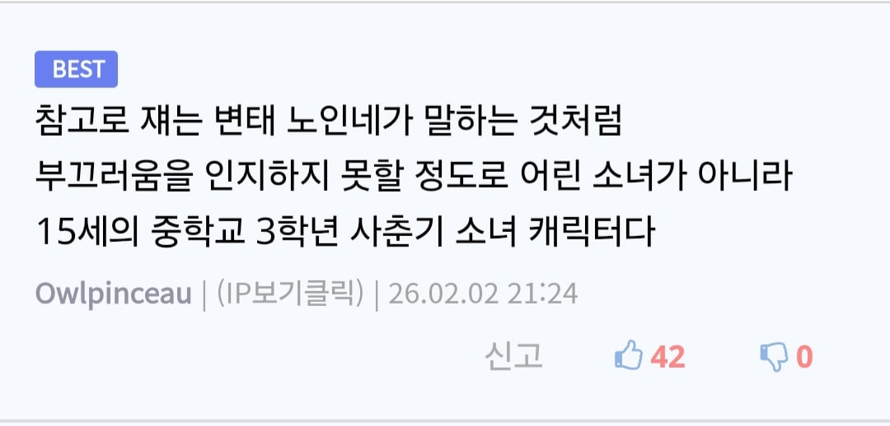

오해가 아니었다


오해가 아니었다
일단 변태는 확실함
꼴잘알
혼자있을때 치마를 누르고 앉는건 성인여성도 별로 없을거 같은데?
그냥 인정하쇼 영감
마니똘개이가
옛날 일본만화는 말그대로 개 드러운 포인트가 많아서 볼 땐 저딴 걸 왜 집어넣나 불쾌했는데 요즘은 그 감성이 좀 그리움
최근엔 드라마 리키시에서 그런 느낌을 잘 받아서 음... 뭔가 그리우면서도 개 더럽네 싶었음
음침함이랑 디테일이랑 섞였다해야하나…
뭔가 무슨 느낌인지 알거 같네 일본 특유의 그 쿰쿰한 맛 ㅋㅋ
카메라 시점을 바꿔 이 변태영감ㅋㅋㅋ
이 장면에서 미야자키 하야오가 직접 저렇게 말한 건 아니고 지브리 프로듀서 저서에서 두 감독의 연출적 차이라면서 언급했던 내용임, 미야자키 하야오라면 치마를 누르고 앉게 하지 않았을거라고
미친 변태 로리콘 영감탱이
미로변영ㄷㄷㄷ
일본인 답네
하긴 아무도 없는 곳에서 고양이를 만질 거면 양손으로 만지지 누가 저런 불편한자세로 만져
개소리지 부모들이 가정교육 안시키는줄 아나ㅋㅋ
저 영감 성질도 더럽고 변태더라. 옛날엔 우상이었는데 파면 팔 수록 좋아하기 힘든 양반이더라....
위인이라는게 다 그런 법이지 뭐
착해서 위인이 아니라 결과물이 끝내주니 위인으로 추앙받는거겠지
저게 고양이랑 저 여자애 말고 주변에 아무도 없는 공간이라서 그럼
감독말 듣고보니 카메라 앵글을 신경쓰는 모먼트가 어색할법하구만 이츠 낫 리얼
로리콘이 확실한 미친 늙은이